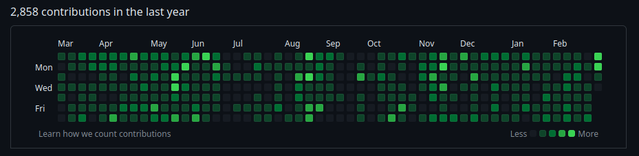

Work on polyproto and taking a break¶
In this little update post I write about what I've done in the last couple of weeks alongside talking about taking just a little break (don't worry, y'all are not getting rid of me!)
It's been more or less two weeks since the last post - time for the next one!
A good amount of commits have been since the X.509 in polyproto was published. Let's break them down a little, shall we?
Certificate Signing Requests¶
The polyproto crate can now be used to create very basic - but to the best of my knowledge fully RFC compliant - Certificate Signing Requests! This is cool, because Certificate Signing Requests are how all Actors (Users) in polyproto will request a Certificate from their home server. The generated CSRs can be fully verified using the OpenSSL/LibreSSL CLIs, which is very important, as these two applications are the industry standard when it comes to working with cryptographic standards like X.509.
Specifically, polyproto uses the well-defined PKCS #10 standard to pack up and transport all the needed CSR information to your future home server.
The next steps here are:
- Creating validators for the information supplied in the CSRs
- Implementing methods to create an ID-Cert from a CSR
- Write great documentation for what exactly the data inside of the ID-CSR has to look like to be valid
...and as you might have already guessed, I am already working on all of these things! :) They just take time
Cleaning up¶
As fun as designing APIs and software architecture is for me, I don't yet always get all of it right on the first try. This is fine though, as long as you recognize the mistakes you've made, learn from them and clean the mess you've made.
I noticed that, as well-meant as some of the traits and trait bounds I've added, they made implementing polyprotos' base types and traits a lot harder than needed. I've been chipping away at the unnecessary and redundant bits, removing some of these traits entirely.
Updating the specification document¶
I really wanted to get started on a reference polyproto implementation before finishing the specification document. This might seem a little counter intuitive, but my thought process was, that implementing the crate in code would force me to think about everything from scratch again, which would make it much easier to spot mistakes I potentially made when writing the specification documentation. These mistakes would primarily be:
- Information that is there, but unimportant
- Information that is important, but not there
- Information that is important, there, but wrong
This turned out to be right. I have added a lot of "TODO"s and "FIXME"s into the specification document since started working on the polyproto crate. All of these TODOs have since been worked on and removed! This doesn't mean that the specification document is now perfect, but it's already better than before, and it'll only get better as I continue to work on the crate!
Another, notable thing that happened is removing the auth-part from the core polyproto protocol! You might be thinking "whaaaat? does that mean that there will be no authentication in polyproto??" but I can assure you, that that's not what this means. Removing the authentication endpoints from the core protocol means that polyproto extensions can now choose authentication technologies and methods for themselves, instead of being forced to implement a bunch of REST-based authentication endpoints they might not even want or use anyways.
I would like to thank @laxla@tech.lgbt for this idea! :> Collaboration and feedback are truly great things, and I am happy to have such
a nice group of people on Discord and Matrix who are genuinely interested in the silly thing I/we want to do with Polyphony and
polyproto :)
Now for the perhaps biggest and probably most important announcement:
Taking a little break for my silly mental health¶
It just dawned on me that March 8th marks the one year anniversary of Polyphony!! That's genuinely so cool, and means that this is the project I have worked on the longest for, out of all of my personal projects.
So yeah - it's been almost a year now! And not a lazy one for me, either.

Content warning
The following paragraph covers the topics of anxiety and depression. If you would not like to read about this, feel free to scroll down until you see a big green box with a check mark. The box indicates that it is safe for you to read again!
Big shocker: I am 👻👻👻👻 depreeeeeeessed 👻👻👻👻👻, and have been for the past... 4-6 years of my life. In that time, I have experienced the absolute lowest points of my life. Luckily, I have the absolute privilege to have a great therapist who I have been with for 2 years now, and I am also on medication which already does a good job (most of the time) at taking the edge off the depression.
As it has been explained to me by my therapist, medication should only be a crutch, though. It should not be the tool you should solely rely on for the rest of your life to deal with extreme (social) anxiety and depression. Other, non-medication-related options should be tried, to potentially get you to stop having to take medication to feel non-completely-absolutely-positively-awful every day.
One of these options is therapy, and, as I've mentioned, I've already been doing that for 2+ years now. It has helped me a great, great deal already, and I can absolutely encourage anyone reading who is feeling similarly to how I've described and who is in the lucky position to get (or at least be put on a waiting list for) therapy, to take the first step. It isn't easy; it can actually feel really really scary at first. But do believe me when I say that a good therapist can absolutely help you to get better.
But one hour of therapy a week can sadly only do so much. This is why I, with the encouragement of my friends, loved ones (particularly my lovely, lovely girlfriend) and my therapist, have decided to admit myself into a mental health clinic that specializes in the treatment of depression, anxiety disorders and the like.
Safety checkpoint reached!
It's now over! :)
Starting on March 20th, I will be leaving my everyday life, my girlfriend, my friends, laptop, work, personal projects and everything else behind to go there, and hopefully leave a good bad part of me behind when I come back.
The clinic is far away though, and leaving absolutely everything behind for a month or possibly a little longer is really, really scary to me. However, I think and hope that the metaphorical plunge into icy water will be worth it for me and my mental health.
When I come back, I'll be better than I was before, which will also mean that I can hopefully be more happy and productive in all aspects of my life, including Polyphony.
If you're reading this on or after March 20th, then see you on the other side :) I hope the grass is greener there!
BEGPOSTING ON MAIN
I am lucky and extremely privileged to have been growing up in Germany, a country with a (mostly) functioning social welfare system and universal health care. If this wasn't the case, I'd likely be absolutely unable to afford to put myself into such good care. Germany doesn't pay for everything though, and the train rides to and from the clinic will likely be expensive for me, as will the 10€ daily fee for staying at a clinic (capped at 280€).
I can currently afford this without financially ruining myself, so don't worry about that. However, this whole endeavour will take a good chunk out of my current savings. Thus, if you'd like to donate to my ko-fi to help me cover the costs, it would mean a lot to me! <3
Please only do so if you are in a stable financial standing yourself, though. As I said, with or without tips, I'll manage. :)